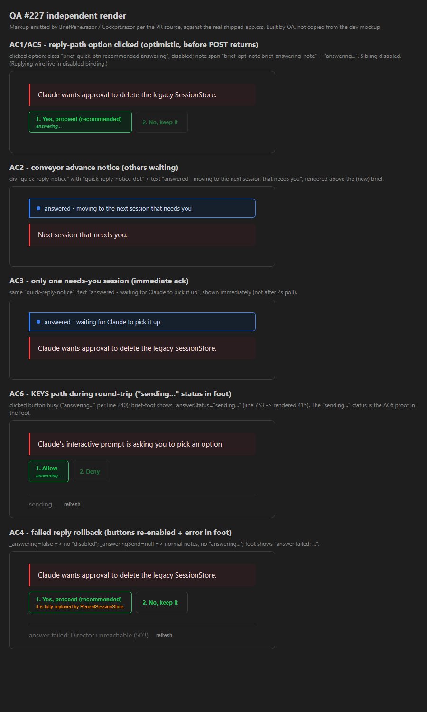

[Cockpit] Answer option buttons give zero feedback on click (reply path). PR #303, branch issue-227-answer-feedback. Independent verification by the QA Agent.
Method. Synced the PR branch, built the solution clean (dotnet build cc-director.sln -> Build succeeded, 0 Warning(s), 0 Error(s)), ran the Cockpit test project (16/16 passed), and verified each acceptance criterion by reading the actual BriefPane.razor / Cockpit.razor source on the PR branch and independently rendering the exact markup the components emit against the real shipped wwwroot/app.css. The screenshot below is the QA Agent's own render (built from the component source, not copied from the developer's mockup) captured with headless Chrome.
| # | Acceptance criterion | Expected | Actual (verified) | Result |
|---|---|---|---|---|
| 1 | Reply-path option click shows answering... and disables the group within the same render, before the POST returns. | Clicked option green "answering...", both buttons disabled, set before the await. | AnswerSingleAsync reply branch sets _answering=true; _answeringSend=o.Send then await InvokeAsync(StateHasChanged) BEFORE OnQuickReply.InvokeAsync (lines 734-740). Markup: clicked button gets answering class + "answering..." note; group disabled="@(_answering || Replying)". Render: green busy option + disabled sibling. | PASS |
| 2 | Conveyor advance states a visible message before/at the jump - no silent teleport. | Blue notice "answered - moving to the next session that needs you" above the next brief. | QuickReplyAsync awaits OnSelect(others[0]) (which clears stale notice) THEN stamps _quickReplyNotice="answered - moving to the next session that needs you" (lines 1045-1046). Notice div lives in the parent above @key'd BriefPane (Cockpit.razor 204-211), so it survives the session switch. Render confirms. | PASS |
| 3 | Only needs-you session: immediate acknowledged state (not after 2s poll). | Blue notice "answered - waiting for Claude to pick it up" immediately. | Else-branch sets _quickReplyNotice="answered - waiting for Claude to pick it up" (line 1050); rendered immediately via the event-handler auto-render. Render confirms. | PASS |
| 4 | Failed reply rolls back optimistic state and shows an error; buttons re-enable. | Group re-enabled, "answering..." gone, error in foot. | Reply-branch catch sets _answering=false; _answeringSend=null; _answerStatus="answer failed: {ex.Message}" (lines 742-748); Blazor auto-renders after the handler. Render: enabled buttons + "answer failed: ..." in foot. | PASS |
| 5 | The Replying parameter is used or removed - no dead wire. | Used with a visible effect. | By inspection/grep: [Parameter] public bool Replying (line 433) is now consumed in disabled="@(_answering || Replying)" (line 234) and passed from the parent as Replying="@_quickReplying" (Cockpit.razor 220). No dead parameter remains. | PASS |
| 6 | KEYS path shows a sending... status during the round-trip. | "sending..." visible while the PTY write is in flight. | KEYS branch sets _answerStatus="sending..." (line 753) before await InvokeAsync(StateHasChanged) and the round-trip; rendered in the brief-foot (lines 413-415). Render: "sending..." in the foot + busy clicked button. | PASS |
| 7 | Before/after HTML mockup with real data committed under docs/cencon/proof/issue-227/; built UI matches it (VisualStyle compliant). | Mockup present; states match; palette tokens used. | before-after-mockup.html present (links the real app.css, uses the real component classes). QA's independent render against the same shipped CSS matches all states. VisualStyle: blue notice uses --blue token, busy state uses the green accent, no off-palette hard-coded colors. | PASS |
_answeringSend, so no stale busy label; both AnswerSingleAsync branches clear the optimistic state).